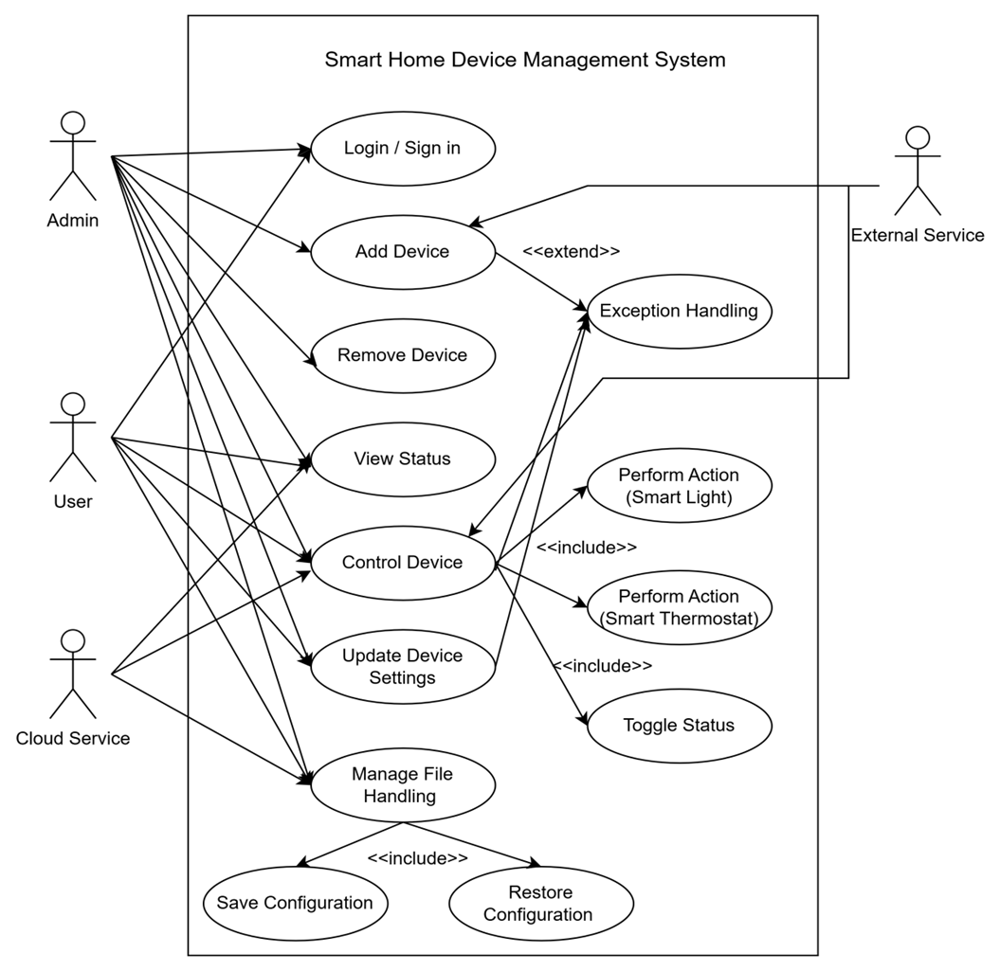
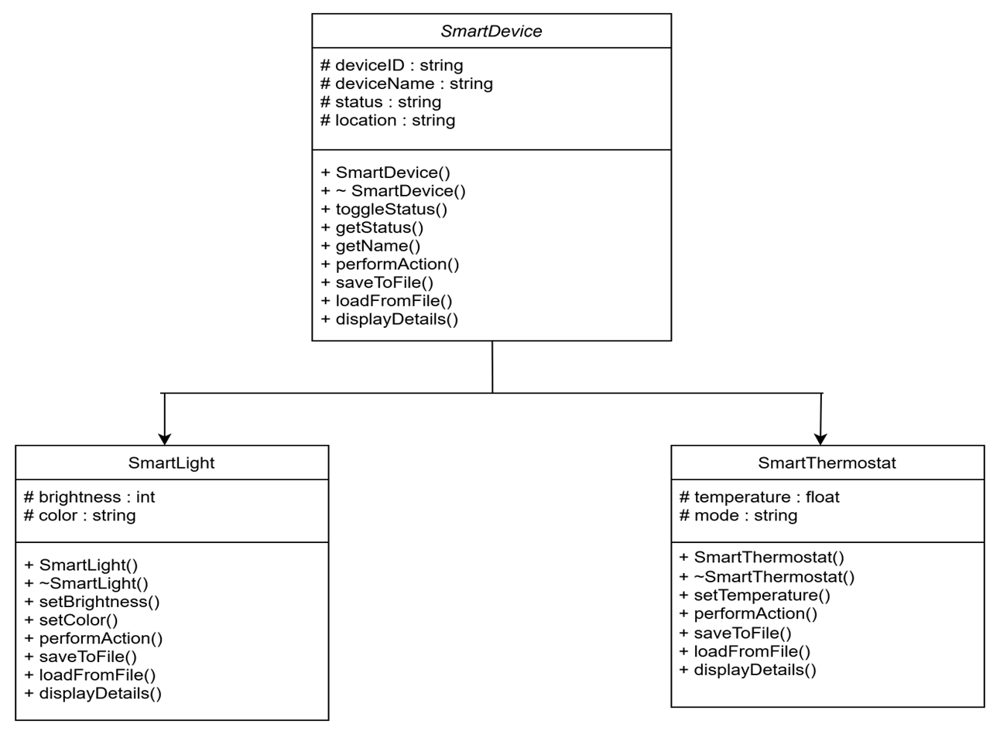

Smart Home Management System
A C++ simulation that models a smart home's devices — lights and thermostats — through a clean, extensible object-oriented architecture, built as a 1st-year final experiential learning project.
01 Problem Statement
Traditional home appliances require manual control and lack intelligent automation. There is a need for a system to simulate and manage smart devices efficiently — one that brings structure, validation, and persistence to what is otherwise a fragmented set of manual controls.
Objectives:
- Simulate smart devices using C++
- Implement SmartLight and SmartThermostat with a common interface
- Enable control via a menu system, with file handling for saving/loading device states
- Apply function templates for generic status display
- Handle input errors with exceptions
02 Problem Identification & Analysis
In modern smart homes, managing a growing number of devices such as lights, thermostats, and cameras can be challenging. Existing systems often lack centralized control, device-specific customization, and efficient error handling — leading to real difficulties:
- Manual Operation — traditional devices don't support automation, requiring intervention for every action
- No Simulation Tools — students need practical, code-based simulations to understand smart system design
- No State Persistence — without file handling, device states are lost after every session
- Unsafe Inputs — temperature or brightness could be set beyond safe limits without validation
- Limited Scalability — non-object-oriented systems are hard to extend and maintain
03 System Design
The system was designed around a clear use-case model and a UML class hierarchy before implementation began.

Use Case Diagram — Admin, User, and Cloud/External Service interactions with the system

Class Diagram — SmartDevice base class with SmartLight and SmartThermostat derived classes
04 Object-Oriented Concepts Applied
🔒 Encapsulation
Attributes like deviceID, deviceName, temperature, and mode are encapsulated within classes. Access and modification happen only through class methods, restricting direct access and preserving data integrity.
🌳 Inheritance (Hierarchical)
A single base class SmartDevice defines common attributes and virtual functions. SmartLight and SmartThermostat both inherit from it and extend functionality with their own specific attributes.
🔁 Polymorphism
The base class declares performAction() and displayStatus() as virtual. Derived classes override these to perform device-specific behavior like adjusting brightness or setting temperature.
🎭 Abstraction
Users interact with a clean, unified interface (DeviceManager and virtual functions) without needing to know the internal implementation of each device — file I/O, validation, and behavior are all abstracted away.
🧩 Templates
DeviceManager<T> is a template class that handles different device types generically, supporting operations like addDevice(), toggleAll(), and saveAllToFile() across any device type.
⚠️ Exception Handling
Robust input validation catches errors like brightness outside 0–100, invalid temperature outside 16°C–30°C, or an incorrect mode (must be "Cool" or "Heat").
05 File Handling
Device configurations — type, ID, name, status, location, and device-specific attributes — are saved to a file named devices.txt, ensuring data persists across sessions. Each class implements its own saveToFile() function using ofstream.